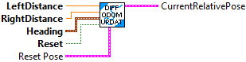

SubVI for differential drive odometry. Odometry allows you to track the robot's position on the field over the course of a match using readings from 2 encoders and a gyroscope.
Teams can use odometry during the autonomous period for complex tasks like path following. Furthermore, odometry can be used for latency compensation when using computer-vision systems.
Updates the robot position on the field using distance measurements from encoders. This method is more numerically accurate than using velocities to integrate the pose and is also advantageous for teams that are using lower CPR encoders.
This implementation slightly differs from the WPILIB C++/Java. The constructor, Update and Reset functions are incorporated into this single routine. There is no need to reset encoders or gyros. This routine compensates by remembering the values at reset. An optional "Initial POSE" can be specified to allow this routine to calculate absolute position. If not specified the position is relative to the position at reset. More than one instance of this can be used if needed. One instance could track absolute field position while another instance can track relative position for executing a trajectory.
Parameters:
- Left distance -- Left wheel encoder distance (meters)
- Right distance -- Right wheel encodeer distance (meters)
- Heading - Robot gyroscope reading
- Reset - When set, this resets the remembered left, right distance and gyroscope values, and sets the current pose to the initial pose.
- Reset Pose - (Optional) When reset is TRUE this pose is used to set the current robot pose. (If the inital pose is zero or not present, the result will be a relative pose. If the reset pose is the absolute field pose, then the result current pose will be absolute.)
Results:
- currentRelativePose - The new pose of the robot. (If the initial pose is absolute, this will be an absolute pose.)